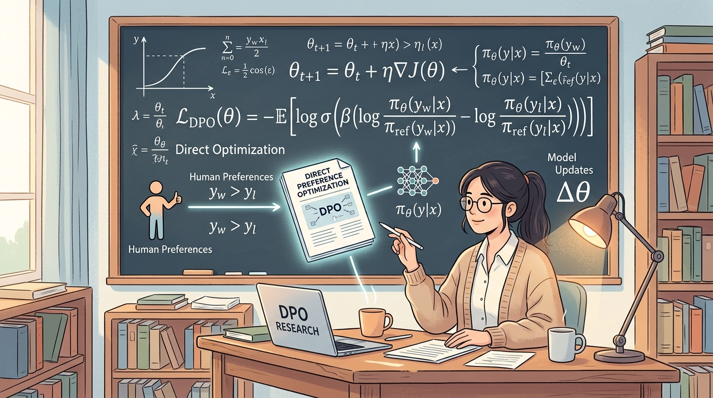

1. Quy trình Căn chỉnh & Tiến trình 3 Bước của LLM
Quá trình huấn luyện một mô hình ngôn ngữ lớn (LLM) trợ lý ảo thông thường tuân thủ quy trình 3 giai đoạn nối tiếp nhau:
Các công thức toán học cơ bản:
AI học tự giám sát bằng cách dự đoán token tiếp theo dựa trên chuỗi lịch sử ngữ cảnh:
Huấn luyện bắt chước các cặp câu hỏi - câu trả lời mẫu theo cơ chế Cross-Entropy Loss:
2. Học tăng cường từ phản hồi (RLHF - PPO)
Phương pháp PPO tương tác động (Online RL), liên tục tự sinh mẫu phản hồi và cập nhật trọng số chính sách dựa trên điểm chấm của mô hình phần thưởng trung gian và hình phạt KL divergence.
Các công thức toán học cốt lõi của PPO:
Cực đại hóa điểm thưởng đồng thời giảm thiểu khoảng cách thay đổi phân phối (KL penalty):
Kìm hãm bước cập nhật chính sách bằng hàm cắt tỉa (Clip) để tránh sụp đổ hiệu suất:
Tính toán lợi thế hành động có trọng số để giảm phương sai tối đa trong thuật toán Actor-Critic:
3. Tối ưu hóa ưu tiên trực tiếp (DPO)
Phương pháp DPO hoạt động ngoại tuyến (Offline), học trực tiếp trên tập dữ liệu tĩnh dựa trên nghiệm dạng đóng để triệt tiêu mạng phần thưởng trung gian.

Các công thức toán học cốt lõi của DPO:
Biểu diễn mối quan hệ trực tiếp giữa chính sách tối ưu $\pi^*$, mô hình tham chiếu $\pi_{\text{ref}}$ và hàm phần thưởng tiềm ẩn $r$:
Dẫn giải hàm phần thưởng tiềm ẩn $r_\phi$ trực tiếp từ tỷ lệ phân phối xác suất của chính sách ngôn ngữ:
Hàm mất mát phân loại nhị phân trực tiếp trên các cặp phản hồi ưu tiên $(y_w, y_l)$:
4. Giới hạn lý thuyết & Định lý 4.1
Nghiên cứu chứng minh DPO có không gian nghiệm tối ưu bao trùm nhưng lại chứa nhiều nghiệm bị lỗi dịch chuyển phân phối ngoài tập dữ liệu tĩnh (OOD):
Giới hạn Toán học của DPO (Định lý 4.1):
Lớp chính sách tối ưu hóa bởi PPO trực tuyến ($\Pi_{\text{PPO}}$) là một tập con thực sự của lớp chính sách tối ưu hóa bởi DPO ngoại tuyến ($\Pi_{\text{DPO}}$):
5. Sơ đồ Vận hành & Cải tiến của PPO SOTA
Bằng cách kết hợp đồng thời 3 trụ cột cải tiến kỹ nghệ, PPO cải tiến đã loại bỏ hoàn toàn các điểm yếu hiệu năng cũ, thiết lập đỉnh cao SOTA lập trình mới:
Công thức Cập nhật động Ref. EMA (Trụ cột 3):
Cập nhật trượt nhẹ nhàng mô hình tham chiếu để kìm hãm sự trói buộc quá mức của lực phạt KL divergence: